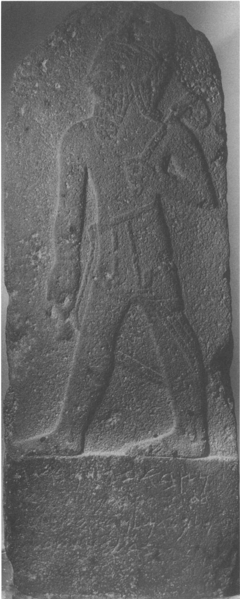

Melqart Stele

- Find Name
- Melqart Stele
- Description
- A basalt stele with a standing representation of the god Melqart above a five-line Old Aramaic inscription (KAI 201), dated to the 9th century BCE (late 9th to early 8th century in recent analysis). Discovered in 1939 in Roman ruins at Bureij, 7 km north of Aleppo, Syria, published the same year by M. Dunand, and now in the National Museum of Aleppo. The text reads: 'The stele which Bir-Hadad, son of [...], king of Aram, erected to his lord Melqart, to whom he made a vow and who heard his voice.'
- Historical Period
- Iron Age II
- Evidence Class
- Contextual
- Interpretations
- The father's name in line 2 is damaged, and exactly who this Bir-Hadad was is debated. Albright attributed the stele to Ben-Hadad I of Damascus, the king of 1 Kings; Kitchen argued there is no evidence connecting it to Ben-Hadad I; Pitard (1985, from firsthand examination) read 'Attar-hamek and placed Bir-Hadad in northern Syria; Hackett and Wilson-Wright (2022) read 'Attar-sumki, Bir-Gush, identifying him as a king of Arpad (reign about 790–760 BCE). Melqart was the Phoenician god of Tyre. Because the identification with a biblical king is unsettled, this entry links the stele to 1 Kings only as background on Aram's kings and cites no specific passage as illuminated.
- Alternative Names
- Ben-Hadad Stele; Bir-Hadad Stele
- Related Books
- Biblical Significance
- It is the oldest inscription invoking Melqart, god of Tyre, and it shows Aramean royal devotion reaching beyond Aram's own gods, in the world of the Ahab narratives.
- Artifact Date
- 9th century BCE
- Current Location
- National Museum of Aleppo
- Date Discovered
- 1939
- Discovery Location
- Bureij, 7 km north of Aleppo, Syria
- Timeline Era
- Divided Monarchy
Awaiting Review Not yet checked against scholarly sources. Treat its claims as provisional until this entry is reviewed. About verification
Last reviewed: not yet reviewed